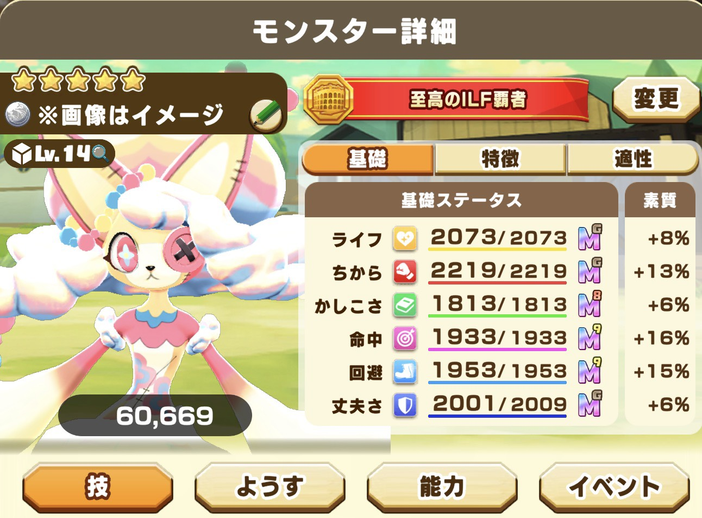
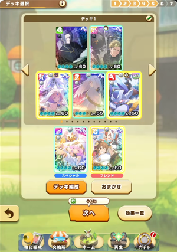
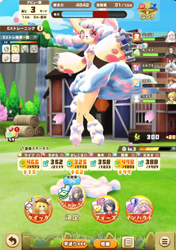
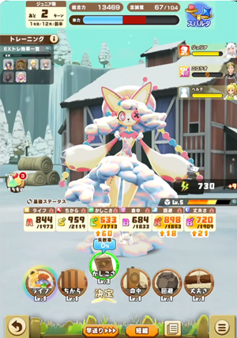
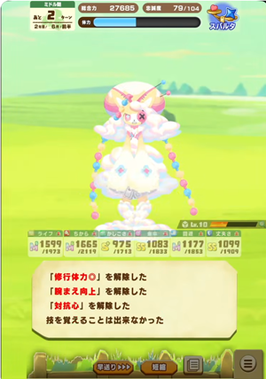
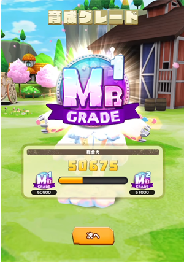
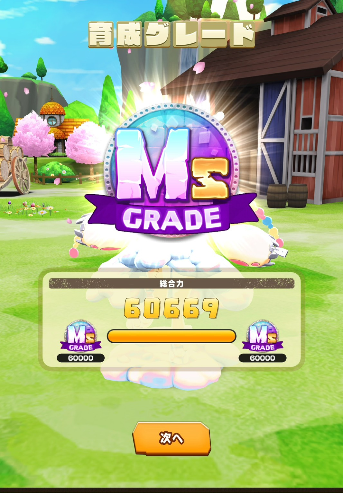

3.5周年で実装されたMRライバル「ジュリア」を使って、白イルミネのドリーミーを総合力ガチ育成してみました。配信でやったやつの切り抜きで、途中の下振れ含めそのまま書いていきます。

師匠枠は正直なんでもいいです。今回の目玉はエルブランシュ完凸とMRライバル「ジュリア」の3凸で、レンタル枠はナデシコを借りました。レンタルをリッピーにして空いた枠を好きなMRにするのもアリですし、2周年のカードを持っている人ならセレネを入れるのもめちゃくちゃアリだと思います。
アイテムはオイリーパックと迷ったんですが、みんながやりやすいライセンスジュースにしました。あと今月からMRの凸緩和が結構入っているので、今回の実装MRについては凸が進んでいる人も少なくないんじゃないかなと思います。

まずブリーダーライセンスを使って忠誠度を整えてから、人数が多いトレーニングを順番に踏んでいきます。この辺はいつもの育成と何も変わりません。ただMRライバルはトレLvが2上がるので、基礎数値がすごく高い状態で始められるのがやっぱり強いところです。

距離適性はエルブランシュのイベントでも上げていけます。ランク5技とランク4技が両方ある距離を上げるのが総合力換算では一番おいしいので、今回は0距離を選び続けました。親密度（動画の中では絆と言っていますが親密度のことです）もなるべく早めに上げて、EXトレで光る可能性を上げにいく方針です。
それとライバルイベントは、デビュー期までに解放しておくのがかなり大事です。体力20回復と全ステ+15がもらえて、完凸なら+18になるらしいのでむちゃくちゃ強いです。ここで「対抗心」と「好敵手の絆」が両方手に入るんですが、この2つは次のイベントが進行するタイミングまでに使わないと獲得済み扱いになって消えてしまいます。対抗心は修行のときにステータスが低いほうを10%上げてくれて、好敵手の絆はライバルアイコンのついた大会で効いてきます。
今回はここが噛み合わなくて、いいトレーニングも大会もない状態が続いたので超修行でお茶を濁しました。最初に修行チケットを3枚もらえるおかげで無駄なターンを潰せるのは、地味に大きなメリットだなと思います。ジュニア期が終わって総合力1万5000ぐらい、着地の見込みは4万8000ぐらいという空気になりました。

ここでジュリアの強さがはっきり分かります。シナリオNPCのベルデさんみたいな、単体では別に強くないメンバーが3人並んでいるだけで賢さがものすごく上がるんですね。ジュリアが持っているアサルトボーナス+2とトレLv+2、それにサポートトレ効果アップがまとめて効いているからで、これだけでこんなに伸びるのはかなり優秀だと思います。
注意点として、SSRライバルのときはひらめきの電球がついていたんですが、MRライバルには電球がつきません。踏んだときにたまに「ライバルからの指摘」というSSRの電球にあたるものがもらえる形で、体力回復も8に上がっていて能力ポイントもまあまあ増えます。ライバルを積極的に踏んでいくのはそんなに悪くないです。ただ分かりやすくしてほしいなというのは本当に思います。
あとジュリアは初期親密度+50を持っているので、ミドル期のわりと早い段階でベリーグッドエンディングが確定します。いともたやすくベリグエンドまで行けてしまうのは、ものすごくいいところです。
そのかわり技がまったく覚えられませんでした。0距離のランク4技を3回連続で失敗し、ブレードダンスに至っては4回失敗して5回目でやっと習得です。85%と65%を1個も覚えられないんだったら、それを修行と呼ぶのはやめてほしいです。なんで動画を撮っているときに限ってこうなるんでしょうか。

それでもステータス自体はエルブランシュとライバルの効果でモリモリ伸びていきます。エルブランシュはライバルの影に隠れていますけど、光っていないトレでもこの数字が出るので個人的には結構ぶっ壊れカードだと思っています。能力ポイントも今までより溢れやすいので、こまめに消費するタイミングを増やしていかないとうっかり無駄になります。
体力管理も思ったより楽でした。総当たり戦のご褒美には体力回復+10がついていて、これがモングラやワルモン、レジェンドリーグにも適用されます。普段は体力5しか回復しない餌でも15回復するようになるので、ごちそうもきで28回復したりします。アイテムがなくても強いトレを踏みにいける場面がかなり増えました。
終盤の話もしておきます。強化修行は1段階目だけ総合力がものすごく入って、2段階目以降はほぼ入らないに等しいです。なのでランク4以下の、まだ強化修行をしていない技を中心に行くのがいいと思います。
ランク5技とランク6技は、覚えた瞬間に強化修行が入るのと一緒です。よく見るとすでに強化済みの扱いになっているので、習得しただけで総合力がかなり上がります。逆にランク4技は覚えたては未強化なので、強化するとその分の総合力がガツッと入ります。上振れを狙うならまだ覚えていない同ランクの技、安牌を取るならランク4の強化修行、という使い分けです。
最後は能力ポイントを53余らせてしまったので、そこは下手くそだったなと思います。

ということで総合力5万600ちょいで終了です。撮っている最中はすごく失敗したなという印象だったんですが、振り返るとトレーニング自体はかなり上振れていた可能性があります。
この動画を撮り終わったあと、一人で同じ編成でもう1回育成したら普通に6万を超えました。

今みんなロードモンスターのワルキューレで6万を超えている感じだと思うんですけど、こっちはドリーミーで超えました。以上です。
※画像はイメージです
とはいえ5万という数字ももう言うほど強くはなくなってきていて、そういう世界に足を踏み入れるチャンスではあると思います。ジュリアとエルブランシュを組み合わせると今までとは違う育成ができるので、みんなも試してみるといいんじゃないかなと思います。